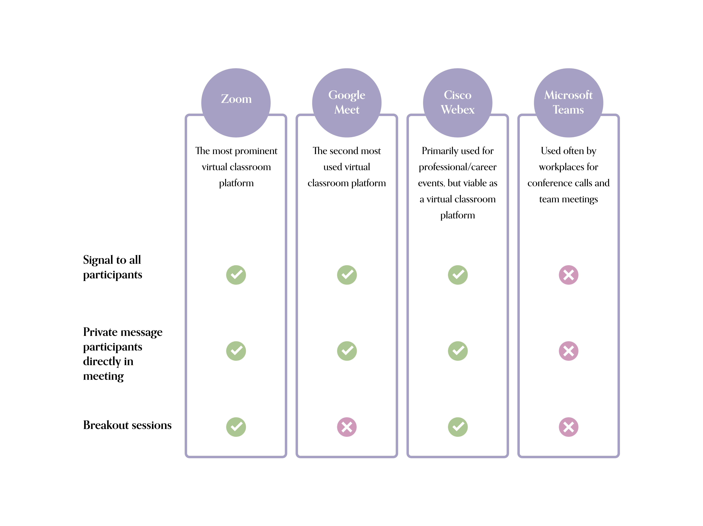
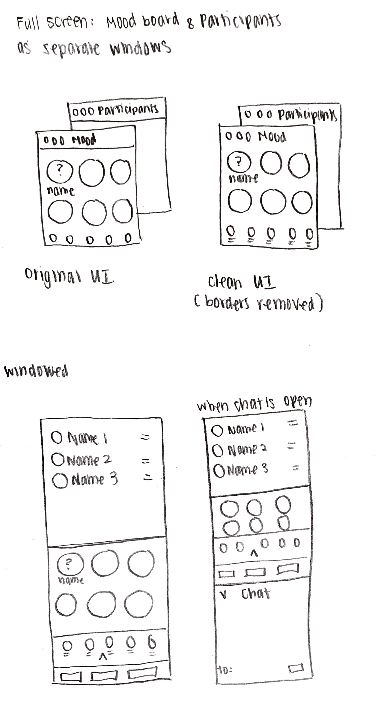
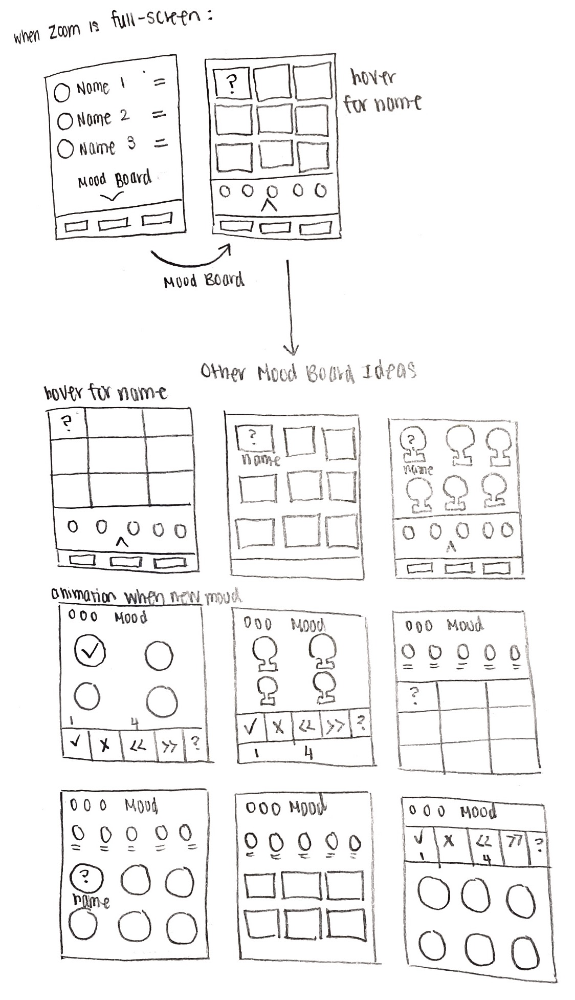
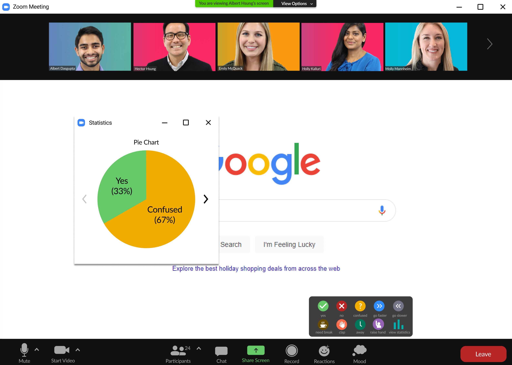

Zoom Redesign: Mood Board
For this class project, I collaborated with a team of software engineers to implement a feature on Zoom, the largest platform for meetings,
to combat the lack of interactivity in Zoom classroom settings.
Role: Product Designer + UX Researcher
Timeframe: Sep 2020 - Dec 2020
Tools: Photoshop, Figma
The Problem
With the onset of the pandemic and the move towards virtual learning, teachers and students have found it difficult to engage with the class and material.
We found a need for improved feedback-sharing in an online learning environment so that teachers and students are on the same page about how the class is responding to the material.
Students need a way to easily communicate their level of understanding so that teachers can adapt their teaching methods in real time to improve student comprehension.
Research Findings

We found through surveys and direct observations that around 65% of our target audience—high school students, teachers, and middle schoolers—were indifferent or dissatisfied with
online learning and that a majority of the students paid attention only half of the time. The distribution of both surveys are correlated, and we concluded that the lack of
engagement in class is a possible factor to the dissatisfaction with online education.
Competitive Audit

Though most platforms have signaling/messaging features, users are dissatisfied by their quality. Many require a license or must be used outside of the immediate meeting.
Furthermore, the features were not created to easily show the mood of the entire meeting, but rather to provide temporary reactions for entertainment.
Personas
We developed 3 personas to describe the most common users that would benefit from increased virtual classroom interactivity, with the first two as our primary personas
and the third our secondary persona.

UI Sketches
We decided to create a Mood Board functionality within Zoom that allows students to anonymously choose their mood from options such as "Confused", "Need Break",
and "Raise Hand". Students and professors can view the class' mood from the Statistics option which displays it as a pie chart and bar graph.


Final Design
The final implementation includes a Mood button with numerous options, including a Statistics option that lets the user cycle between different graphs.

Final Thoughts + Moving Forward
I had a really great time on this project! It was my first formal UI/UX class and case study, and it taught me that I love using design to improve
people's experiences and that even the smallest design decisions create a huge impact on the final product.
Moving forward, I would:
- Implement the teacher's side of the Mood Board that notifies them of significant changes in the class' moods to increase interactivity
- Perform user testing on the Mood options to include only the most popular ones so that the Mood Board is more concise
- Align UI color choices with Zoom's brand guide